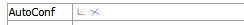

Tensors
Description
User defined tensor data.
Attributes
Color By
Determines how the plot item will be colored.
There are three groups of options here: textual values, numeric values, and vector quantities. All choices are mutually exclusive; only one selection can be active at any time. In some cases (the text value “extra,” for instance) an additional field is supplied to specify additional parameters as needed. When these appear they are described in the tables below.
Color-List

Configure the list used to color the plot item.
Color-List: Set which items on the list are displayed. The field contains “Select None”, “Select All”, and “Invert Selection” buttons, respectively. These are followed by the “Global” checkbox, which, if checked, causes the current pairing of colors and labels to be used globally across all plots. For example, if a specific, consistent color is desired for group names that appear in all plots, this setting will be useful.
This field is also a container for the items on the list.
[Item]: When the list contains one or more items, they are listed beneath the main field. The item’s name is used as a label for the field. If checked, the item is displayed. Next a color control appears to set/indicate the item color. The current label for the item appears next; initially this defaults to the item name. The settings button (…) may be used to set an “alias” that can be used instead of the item name when displayed in the legend.
Scale

Size the plot item.
Scale: Automatically (checked) scale the plot item. The Target field specifies the target scaling (as a percentage of screen size). If unchecked, the edit field may be used to manually scale the item.
Line

Set the outline properties of the plot item.
Line: set line style and thickness.
Note
Depending on context, this control may also feature:
–a checkbox for including (checked) the line in the plot item, and/or
–a color control for setting the color of the line.
Legend
Set display of the item in the plot legend. All plot items, at minimum, have a Title attribute.
Legend: Show (checked) all information about the plot item in the legend.
Title: Show (checked) the title of the plot item in the legend. The “Alias:” field may be used to specify a custom title for the item.
Size: Set the size of text in the legend.
Font: Set the font face used for the text.
Style: Set the text style (the options are normal, bold, italic, bold-italic).
Color: Set the text color.
| Was this helpful? ... | UDEC © 2018, Itasca | Updated: Mar 15, 2024 |